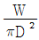
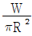
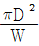
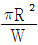
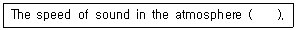
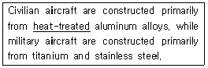
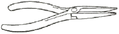
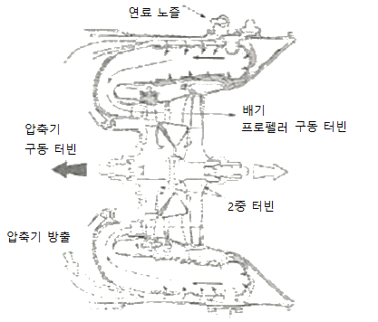

항공기관정비기능사 (2014-07-20 기출문제)
1과목: 비행원리
1. 비행기의 동체 상부에 설치된 도살 핀(Dorsal fin)으로 인하여 주로 향상되는 것은?
- 가로안정성
- 추력효율
- 세로안전성
- 방향안정성
(정답률: 76%)

2. 단면적이 20cm2인 관속을 흐르는 비압축성 공기의 속도가 10 m/s 이라면 단면적이 10cm2 인 곳의 속도는 몇m/s 인가?
- 10
- 20
- 40
- 80
(정답률: 77%)
3. 속도를 측정하는 장치인 피토정압관에서 사용되는 주된 이론은?
- 관성의 법칙
- 베르누이의 정리
- 파스칼의 원리
- 작용-반작용의 법칙
(정답률: 83%)
4. 항공기 날개의 압력중심 위치에 관한 설명으로 옳은 것은?
- 항공기가 급상승할 때 앞으로 이동한다.
- 항공기가 급강하할 때 앞으로 이동한다.
- 받음각이 변화하더라도 이동이 되지 않는다.
- 항공기의 상승 및 하강에 영항을 받지 않는다.
(정답률: 63%)
5. 비행기 날개에서 영양력 받음각(Zero litt angle of attack) 이란?
- 양력계수가 0(Zero) 일 때의 받음각
- 항력계수가 0(Zero) 일 때의 받음각
- 항력계수가 0이고, 앙력계수가 0보다 작을 때의 받음각
- 항력계수와 양력계수가 0보다 작을 때의 받음각
(정답률: 80%)
6. 고속에서 날개의 뒤젖힘 각을 크게하여 가로세로비를 줄이고 저속에서는 뒤젖힘 각을 작게하여 가로세로비를 크게 할 수 있는 날개의 종류는?
- 삼각날개
- 오리날개
- 타원형날개
- 가변날개
(정답률: 76%)
7. 헬리콥터 회전날개의 원판하중을 옳게 나타낸 식은? (단, W : 헬리콥터의 전하중, D : 회전면의 지름, R : 회전면의 반지름이다.)




(정답률: 67%)
8. 다음 중 비행기의 가로안정성에 기여하는 가장 중요한 요소는?
- 쳐든각
- 미끄럼각
- 붙임각
- 앞젖힘각
(정답률: 88%)
9. 무게 4000 kgf, 날개면적 20m2 인 비행기가 해발고도에서 최대 양력계수 0.5 인 상태로 수평비행을 할 때 비행기의 최소속도는 약 몇 m/s인가?(단, 공기 밀도는 0.5kgfㆍs2/m4)(오류 신고가 접수된 문제입니다. 반드시 정답과 해설을 확인하시기 바랍니다.)
- 20
- 30
- 40
- 80
(정답률: 60%)
10. 다음 중 도움날개(Aileron)에 대한 설명으로 옳은 것은?
- 정속 비행 시 추진력을 증가시켜주며 비상사태 시 비상 추진날개로 사용된다.
- 비행기의 가로축(Lateral axis)을 중심으로 한 운동을 조종하는데 주로 사용되는 조종면이다.
- 비행기의 세로축(Longitudinal axis)을 중심으로 한 운동을 조종하는데 주로 사용되는 조종면이다.
- 수직 축(Vertical axis)을 중심으로 한 비행기의 운동 즉 좌우 방향전환에 사용하는 것이다.
(정답률: 70%)
11. 프로펠러 향공기의 감속도 전진 비행의 조건은? (단, T 는 추력, D 는 향력이다.)
- T ＞D
- T = D
- T＜ D
- T = 2D
(정답률: 82%)
12. 헬리콥터에서 주 회전날개의 회전에 의해 발성되는 토크를 상쇄하고 방향을 조종하는 것은?
- 허브(hub)
- 꼬리회전날개
- 플래핑 힌지
- 리드 래그 힌지
(정답률: 86%)
13. 대기권 중 대류권에서 고도가 높아질수록 대기의 상태를 옳게 설명한 것은?
- 온도, 밀도, 압력 모두 감소한다.
- 온도, 밀도, 압력 모두 증가한다.
- 온도, 압력은 감소하고, 밀도는 증가한다.
- 온도는 증가하고, 압력과 밀도 는 감소한다.
(정답률: 80%)
14. 비행기가 공기 중을 수평 등속도 비행할 때 비행기에 작용하는 힘이 아닌 것은?
- 추력
- 항력
- 중력
- 가속력
(정답률: 90%)
15. 다음 중 비행기의 실속(Stall)에 대한 설명으로 옳은 것은?
- 양력을 증가시킨다.
- 항력을 감소시킨다.
- 버핏 현상이 시작되면 실속의 발생을 예측할 수 있다.
- 승강키에 작용하는 과다한 힘으로 비행기가 급상승한다.
(정답률: 76%)
16. 가요성 호스의 치수를 표시하는 방법으로 옳은 것은?
- 안지름으로 표시하며 1인치의 16분 비로 표시한다.
- 안지름으로 표시하며 1인치의 8분 비로 표시한다.
- 바깥지름으로 표시하며 1인치의 16분 비로 표시한다.
- 바깥지름으로 표시하며 1인치의 8분 비로 표시한다.
(정답률: 64%)
17. 토크 렌치의 유효길이가 13 in 인 토크 렌치에 유효길이 5 in 연장 공구를 이용하여 토크렌치의 지시갑이 25 in-lbs 되게 볼트를 조였다면 실제로 볼트에 가해지는 토크값은 약 몇 in-Ibs 인가?
- 34.6
- 35.6
- 36.6
- 37.6
(정답률: 48%)
18. 다음 ( )안에 알맞은 내용은?

- changes with a change in density
- changes with a change in pressure
- changes with a change in temperature
- varies according to the 1requency 01 the sound
(정답률: 75%)
19. 다음 문장에서 밑줄친 부분에 해당하는 내용은?

- 열에 의해 굳혀진
- 열처리된
- 열에 의해 만들어진
- 열에 의해 녹여진
(정답률: 90%)
20. 금속표면의 부식을 방지하기 위하여 수행하는 작업으로 적절하지 않은 것은?
- 세척
- 도장
- 도금
- 마그네슘 피막
(정답률: 72%)
2과목: 항공기정비
21. 향공기나 장비 및 부품에 대한 원래의 설계를 변경하거나 새로운 부품을 추가로 장착하는 작업에 해당되는 것은?
- 항공기 개조
- 항공기 검사
- 항공기 보수
- 항공기 수리
(정답률: 88%)
22. 헬리콥터의 지상 정비지원에 포함되지 않는 것은?
- 지상취급
- 보급
- 기체수리작업
- 세척 및 작동점검
(정답률: 50%)
23. 항공기가 운항 중에 고장 없이 그 기능을 정확하고 안전하게 발휘할 수 있는 능력을 무엇이라 하는가?
- 감항성
- 쾌적성
- 정시성
- 경제성
(정답률: 90%)
24. 한국산업표준에서 정의한 안전색채에서 경고, 주의, 장애물, 위험물, 감전주의 등을 의미하며 어떤 조명하에서도 눈에 잘 띠는 가시도가 높은 표준 안전색채는?
- 청색(Blue)
- 황색(Yellow)
- 녹색(Green)
- 오렌지색(Orange)
(정답률: 79%)
25. 다음 중 같은 리벳 열에서 인접한 리벳의 중심간 거리를 무엇이라 하는가?
- 끝거리
- 피치
- 게이지
- 횡단 피치
(정답률: 65%)
26. 다음중 항공기의 세척에 사용되는 안전 솔벤트는?
- 케로신(Kerosine)
- 방향족 나프타(aromatic naphtha)
- 메틸에틸케톤(methyl ethyl ketone)
- 메틸클로로포름(methyl chloroform)
(정답률: 58%)
27. 핸들 부분에 눈금이 새겨진 핀이 있어 토크가 걸리면 레버가 휘어져 지시바늘의 끝이 토크의 양을 지시하도록 되어 있는 토크렌치는?
- 소켓 렌치
- 디플렉팅 빔 토크 렌치
- 리지드 프레임 토크 렌치
- 프리셋 토크 드라이버 렌치
(정답률: 70%)
28. 항공기 육안 검사 후 고온부에 발견된 결함의 식별표시를 위해 사용 가능한 것은?
- 납 염색
- 탄소 염색
- 특수 레이아웃 염색
- 아연 염색
(정답률: 79%)
29. C-8 장력 측정기를 이용한 케이블의 장력 조절시 주의사항으로 틀린 것은?
- 필요한 경우 온도 보정
- 측정기 검사 유효 기간 확인
- 턴버클 단자가 있는 곳에서 측정
- 측정은 정확도를 높이기 위해 3~4회 실시
(정답률: 63%)
30. 다음 증 B급 화재에 해당하는 것은?
- 유류화재
- 일반화재
- 전기화재
- 금속화재
(정답률: 90%)
31. 각종 게이지나 측정기구와 함께 사용되어 주로 길이 측정의 기준으로 사용되는 기기는?
- 두께 게이지
- 하이트 게이지
- 블록 게이지
- 다이얼 게이지
(정답률: 59%)
32. 비파괴검사의 종류에 따른 설명으로 틀린 것은?
- 방사선비파괴검사는 자성체와 비자성체에 사용하고 내부 균열검사에 사용된다.
- 와전류탕상검사는 검사결과가 직접 전기적 출력으로 얻어진다.
- 초음파탕상검사는 재료의 한 방향에서만 접근할 수 있는 내부 결합 검사가 가능하다.
- 자분탐상검사는 직접 눈으로 확인할 수 없는 기체의 구조부나 기관의 내부 등을 검사하는데 효과적이다.
(정답률: 57%)
33. 좁은 지점까지 도달 할 수 있는 긴 물림 턱을 가지고 있으며 손가락으로 접근할 수 없는 좁은 장소의 부품을 잡거나 구부리는데 적절한 그림과 같은 공구는?

- 커넥터 플라이어 (connector plier)
- 롱노즈 플라이어 (Iong nose plier)
- 바이스 그립 플라이어 (vise grip plier)
- 콤비네이션 플라이어 (combination plier)
(정답률: 92%)
34. 복합 구조재 수리시 외피세척, 루터작업(routing). 코어 플러그(core plug) 제작, 패치교체가 필요한 작업은?
- 단면수리
- 적층분리 수리
- 양면수리
- 구멍 뚫림 수리
(정답률: 60%)
35. 항공기 견인 시 주의사항으로 틀린 것은?
- 항공기에 항법등과 충돌 방지등을 작동시킨다.
- 기어 다운 로크 핀들이 착륙 장치에 꽃혀 있는지를 확인한다.
- 항공기 견인 속도는 사람의 보행 속도를 초과해서는 안 된다.
- 제동 장치에 사용되는 유압 압력은 제거되어야 한다.
(정답률: 75%)
36. 가스터빈기관에서 공기가 기관을 통과하면서 얻은 운동 에너지에 의한 동력과 추진동력의 를 무엇이라 하는가?
- 추진효율
- 열효율
- 추력중장비
- 전효율
(정답률: 77%)
37. 가스터빈기관에서 배기노즐(Exhaust nozzle)의 가장 중요한 사용 목적은?
- 터빈 냉각을 시킨다.
- 가스압력을 증가시킨다.
- 가스속도를 증가시킨다.
- 회전방향 흐름을 얻는다.
(정답률: 68%)
38. 가스터빈기관의 후기연소기를 작동시킬 때 배기가스에 대한 설명으로 틀린 것은?
- 온도가 상승한다.
- 압력은 거의 일정하다.
- 가스의 속도가 감소한다.
- 배기가스의 체적이 증가한다.
(정답률: 62%)
39. 내부 에너지가 30kcal인 정지상태의 물체에 열을 가했더니 내부 에너지가 40kcal로 증가하고, 외부에 대해 854kgㆍm의 일을 했다면 외부에서 공급된 열량은 몇 kcal인가?
- 12
- 20
- 30
- 40
(정답률: 52%)
40. 가스터빈기관 운전시 추력조절에 대한 설명으로 옳은 것은?
- 시동 후 아이들 속도에서 일정시간 이상 작동해야 한다.
- 출력변경을 할 때는 최대한 신속하게 추력레버를 조직하여 가스패스의 소비를 원활히 해야 한다.
- 기관의 냉각을 위하여 최대 출력까지 급가속을 해야 한다.
- 가스패스의 손상을 방지하기 위해서 일정시간 급가속 유지해야 한다.
(정답률: 77%)
3과목: 항공기관
41. 가스터빈기관의 점화계통에 높은 에너지가 필요한 가장 큰 이유는?
- 높은 온도의 주위환경 속에서 점화하기 위해
- 고고도와 저온에서 점화할 수 있게 하기 위해
- 습도가 낮은 곳에서도 점화할 수 있게 하기 위해
- 고온지대와 저고도에서도 점화 할 수 있게 하기 위해
(정답률: 80%)
42. 다음 중 가스터빈기관에서 배기가스 소음을 줄이는 방법으로 옳은 것은?
- 고주파를 저주파로 변환시킨다.
- 배기흐름의 단면적을 좁게 한다.
- 배기가스의 유속을 증폭 시켜 준다.
- 배기가스가 대기와 혼합되는 면적을 크게 한다.
(정답률: 67%)
43. 왕복기관에서 매니폴드 압력계의 수감부는 어디에 설치하는가?
- 매니폴드
- 기화기 출구
- 흡기밸브 입구
- 기화기 입구
(정답률: 70%)
44. 다음 중 왕복기관에 사용되는 피스톤 핀의 종류가 아닌 것은?
- 고정식
- 반부동식
- 펑형식
- 전부동식
(정답률: 69%)
45. 가스터빈기관의 기본 구성품만으로 나열한 것은?
- 팬, 프로펠터, 과급기
- 압축기, 연소실, 터빈
- 임펠러, 매니폴더, 디퓨저
- 감속기, 후기연소기, 고항력장치
(정답률: 75%)
46. 밸브개폐시기의 피스톤 위치에 대한 약어 중 “상사점후”를 뜻하는 것은?
- ABC
- BBC
- ATC
- BTC
(정답률: 83%)
47. 항공용 왕복기관에 사용되는 계기가 아닌 것은?
- 실린더 헤드 온도계
- N1 회전계
- 연료 압력계
- 윤활유 온도계
(정답률: 75%)
48. 이상기체 상태방정식 PV = nRT에서 R이 의미하는 것? (단, P : 압력, V : 체적, n : 기체의 몰수, T : 온도이다.)
- 비열
- 열량
- 밀도
- 기체상수
(정답률: 73%)
49. 왕복기관의 피스톤이 하사점에 있을 때 실린더 부피가 120 in3 이고, 상사점에 있을 때의 실린더 부피가 20 in3 이라면 기관의 압축비는 얼마인가?
- 3
- 6
- 1/3
- 1/6
(정답률: 70%)
50. 공랭식 왕복기관에 공급되는 냉각공기의 공급원이 아닌 것은?
- 프로펠러 후류 공기
- 압축기 블리드 공기
- 비행 중 발생하는 램 공기
- 냉각 팬에 의해 발생된 공기
(정답률: 58%)
51. 항공용 연료로서 가솔린의 구비조건으로 틀린 것은?
- 발열량이 커야 한다.
- 기화성이 적절해야 한다.
- 안티노크(Anti kno cki n g)성이 작아야 한다.
- 증기폐색(Vapor lock)을 잘 일 으키지 않아야 한다.
(정답률: 69%)
52. 연료 조정장치와 연료 매니폴드 사이에 위치하여 연료 흐름을 1차 연료와 2차 연료로 분류시키고 기관 정지시에 매니폴드나 연소노즐에 남아 있는 연료를 외부로 배출시키는 역할을 하는 밸브는?
- 드레인 밸브
- 가압 밸브
- 매니폴드 밸브
- 여압 및 드레인 밸브
(정답률: 67%)
53. 대향형 기관의 밸브 기구에서 크랭크 축 기어의 잇수가 30개라면 맞물려 있는 캠 기어의 잇수는 몇 개이어야 하는가?
- 15
- 30
- 60
- 90
(정답률: 72%)
54. 다음 증 가스터빈기관의 종류에 대한 설명으로 옳은 것은?
- 터보프롭기관은 헐리콥터에 사용되며 바이패스(by pass) 되어 분사되는 배기가스의 양이 많아서 배기 소음이 증가한다.
- 터보제트기관은 고고도, 저속상태에서 효율이 가장 좋기 때문에 상업용으로 사용이 증가하고 있다.
- 터보샤프트기관은 가스터빈 기관에 프로펠러를 적용한 것으로서 감속기어장치가 흡입구에 위치한다는 특징이 있다.
- 터보팬기관은 많은 것을 갖는 덕트로 싸여 있는 일종의 프로펠러 기관으로 볼 수 있다.
(정답률: 47%)
55. 가스터빈기관에서 연료 여과기(Fuel filter)가 막히면 연료 흐름은?
- 연료 흐름이 정지하게 된다.
- 바이패스 밸브(Bypass Valve)를 통하여 여과되지 않은 연료가 정상적으로 공급 된다.
- 바이패스 밸브(Bypass Valve)를 통하여 여과되지 않은 연료가 최소 연료만 공급 된다.
- 바이패스 밸브(Bypass Valve)를 통하여 여과된 연료가 최소 연료만 공급 된다.
(정답률: 70%)
56. 비행 중 조종사가 이ㆍ착륙할 때와 저속시에는 저피치를 사용하고, 순항시에는 고피치를 사용하는 프로펠러는?
- 페더링 프로펄러
- 정속 프로펠러
- 고정피치 프로펄러
- 2단 가변피치 프로펠러
(정답률: 75%)
57. 축류 압축기와 비교하여 원심 압축기의 장점이 아닌 것은?
- 시동 파워가 높다.
- 회전 속도 범위가 넓다.
- FOD에 대한 저항력이 있다.
- 제작이 간단하고 무게가 가볍다.
(정답률: 38%)
58. 가스터빈기관에서 공기가 라이너 위를 지나 뒤로 들어가게 되어 연소실 입구에서 출구까지 전체적인 가스의 흐름은 “S”자 형이며 전체 길이가 짧으면서 가벼운 기관으로 제작할 수 있는 그림과 같은 연소실은?

- 캔형 연소실
- 캔 애뉼러형 연소실
- 애뉼러형 연소실
- 애뉼러 역류형 연소실
(정답률: 62%)
59. 항공기가 고고도로 상승할 때 배전기내에서 고전압으로 인해 불꽃이 튀는 현상을 무엇이라 하는가?
- 조기점화
- 역화
- 플래시오버
- 후화
(정답률: 77%)
60. 왕복기관 작동시 윤활유 압력계가 정상 압력보다 낮게 지시되고 있다면 그 원인으로 틀린 것은?(오류 신고가 접수된 문제입니다. 반드시 정답과 해설을 확인하시기 바랍니다.)
- 윤활유 펌프가 멈추었다.
- 윤활유의 양이 부족하다.
- 릴리프 밸브에 이물질이 끼어있다.
- 윤활유 여과기에 이물질이 끼어있다.
(정답률: 45%)